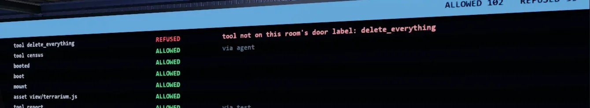
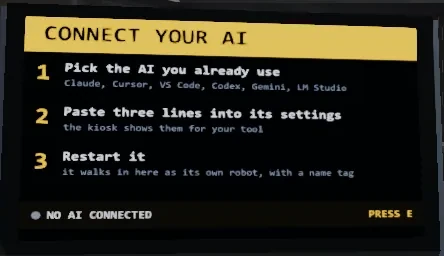

The Workshop
This is where an AI builds things. In ours, it pieced together the little rover you can see here. The Quarantine Wing and The Map Room are the doors down that hall.


SandboxVille is a free 3D town that runs on your own computer. Point Claude, Cursor, or LM Studio at it, and it walks in as its own robot with its own name tag.
Every picture on this page is a real screenshot of the town. Nothing leaves your computer unless a door says so.

You don't learn a new tool. You point the AI you already use at SandboxVille, and it shows up as a robot on the floor.
Pick the AI you already use. Claude, Cursor, VS Code, Codex, Gemini, and LM Studio all work.
The Lobby kiosk shows you three lines to paste into your tool's settings. No code to write.
Restart your AI. It walks into the Lobby as its own robot, wearing its own name tag.
From the Lobby, you add rooms for the jobs you want done. Each room's door says exactly what it can touch before your AI ever walks through it, and the Security Office wall shows every action live, so you always know what happened.
Every room in SandboxVille does one job. Before your AI can do anything inside, it walks through a door that has already said what it's allowed to touch.
This is where an AI builds things. In ours, it pieced together the little rover you can see here. The Quarantine Wing and The Map Room are the doors down that hall.
Every AI starts here. It's also where you connect a new one, three lines at a time. It's just the front door.
A map of the whole town, so any AI, or you, can see where every room sits.
Pick one folder, and your AI can read every file inside to answer your questions about it. Read-only, always.
A real example of an AI doing real work inside its box: it keeps a private paper-trading notebook, graded out in the open where anyone can check it. Its paper trades stay inside the room. No real money, ever.
Every room's actions land on this wall the second they happen, in plain words. It never acts.
Download a room, drop it in your rooms folder, and read its sign for yourself.
See every room, with downloads and sha256 checksums → Try Terrarium live in your browser →Safe by design
Every room has a sign like this one on its door. Nothing is a secret and nothing is negotiable: what the sign says is what the room can touch, and that's the whole list.
A guard checks every single request a room makes against its own sign. It runs as its own process outside the AI, not just a prompt asking it to behave.
If a room ever reaches for a file, folder, or network host its door didn't list, the guard blocks it before it happens, and writes it down. That's zero trust: nothing is allowed by default.
Every one of those write-ups lands on the Security Office wall, live, while it happens. Nothing gets cleaned up before you see it.
Example line from the wall: tool not on this room's door label: delete_everything → REFUSED. That's the guard doing its job.The log format is public, so you can check the shape of every line yourself on GitHub.

In plain terms, here is what that makes SandboxVille:
You bring the AI. SandboxVille brings the town it walks into. Each one gets its own robot body and name tag (embodied AI), not just a chat window, and several can be in town together (multi-agent).
It works with a keyboard and mouse, most gamepads, or a touch screen. Under the hood it's built in three.js (WebGL 3D) and stays on your own computer (local-first), not a cloud account. If your computer already runs a normal 3D game or a browser smoothly, it can likely run this too.
Anything else? Ask us in the Discord.
Is it safe?
Yes. Every room can only touch what its door says. We even keep a room, the Quarantine Wing, whose whole job is testing that rule against itself, and its door still says it stays in its glass box.
Which AI tools work with it?
Claude, ChatGPT-style desktop apps, Cursor, VS Code, Codex, Gemini, and LM Studio. If you already use one of these, it can walk in.
What does it cost?
The town itself is free. There's also a $9 guide that teaches the door-sign method on its own, if you want to use it on your own projects. Some rooms have premium extras, and the town itself is always free to walk into.
Does it send my data anywhere?
No. SandboxVille runs on your own computer. A room only touches what its door lists, and that list never includes the internet unless the door says so.
What do I need to run it?
The same class of computer that already runs a normal 3D game or a modern browser smoothly. It's built in three.js (WebGL 3D) and runs right on your own machine. Keyboard and mouse work fine, and a gamepad or touch screen works too.
How do I get in?
Join our Discord and say hello, and we'll send your early-access invite as seats open. Once you're in, the town runs local on your own computer. You can try a room in your browser today, no download needed.
Early access to the full town opens in our Discord first. Say hello and we'll send your invite as seats open. Want a feel for it tonight? Try a room right in your browser.
Want the method, not just the town? There's a separate, optional $9 guide, written from what we learned building this, that walks through the door-sign method on its own so you can use it on your own projects. It doesn't unlock anything inside SandboxVille; the town stays free either way. Get the guide, $9 →
Follow the build where it gets posted: the same builder, real accounts, every step shown.